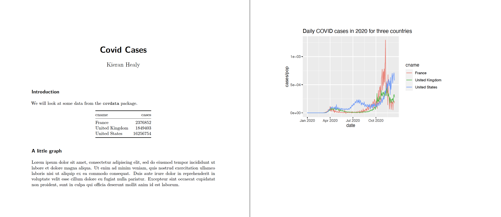
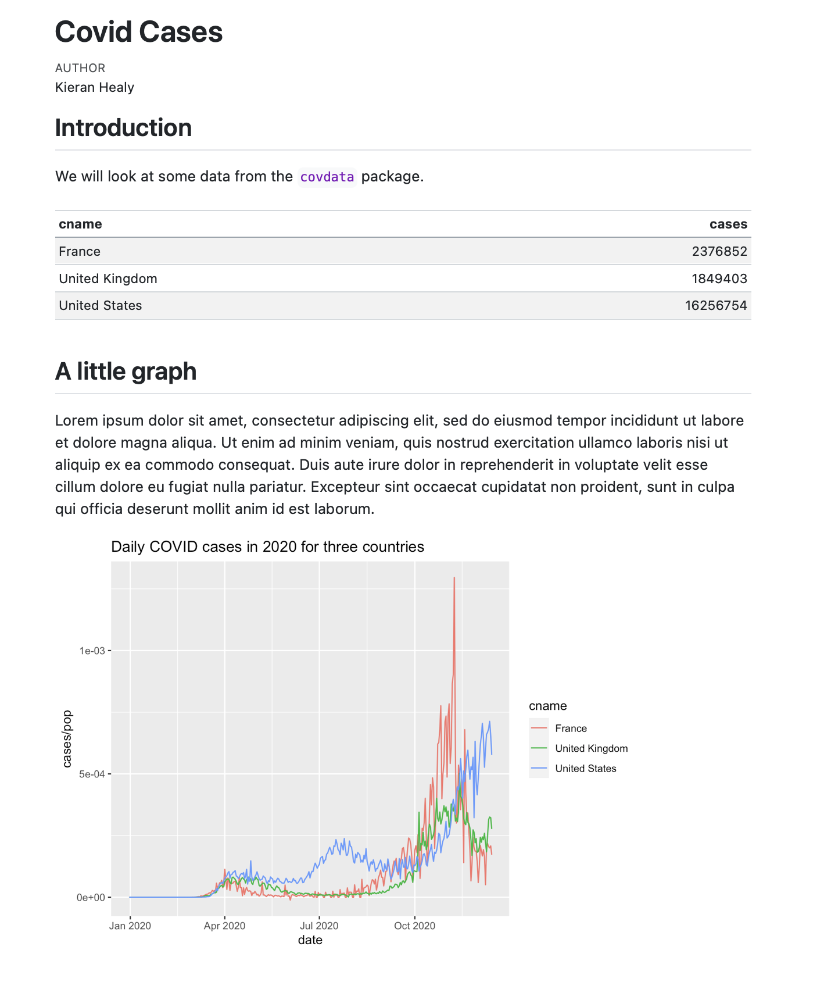
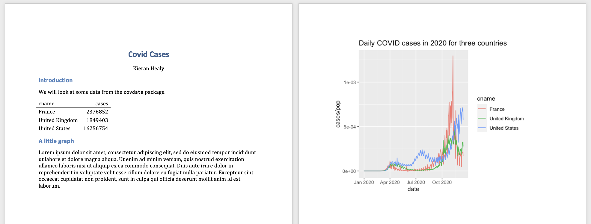
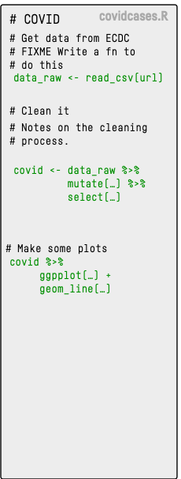
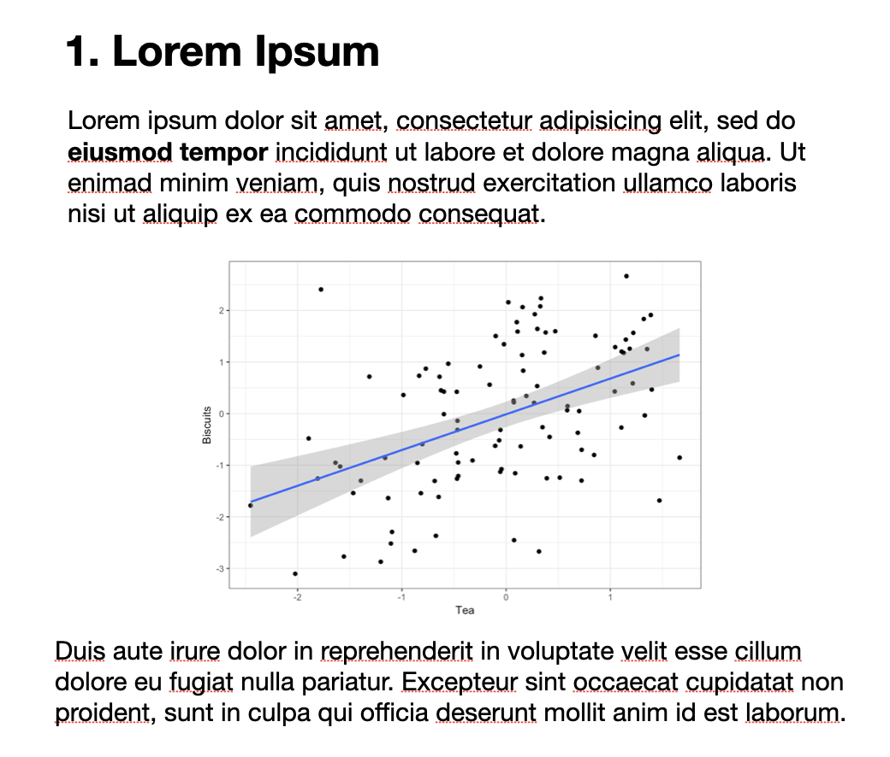
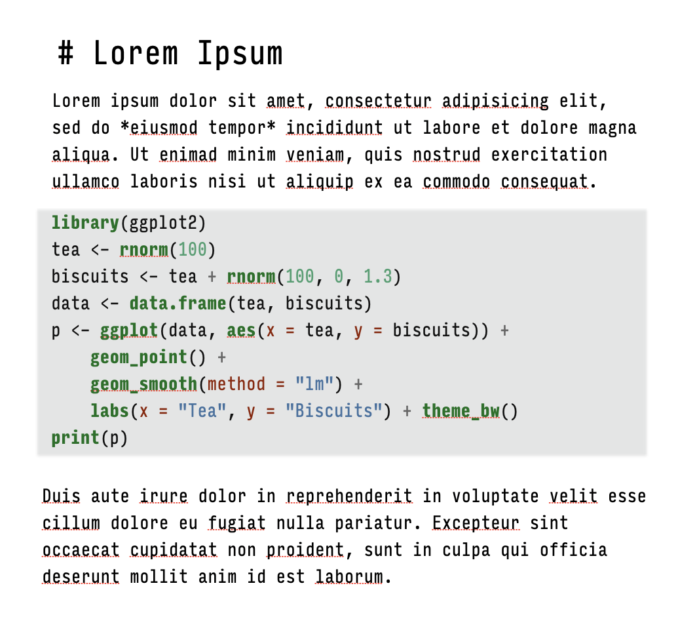
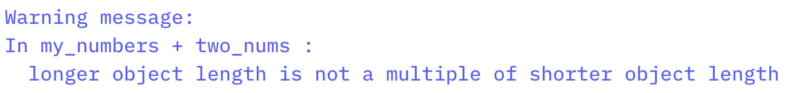
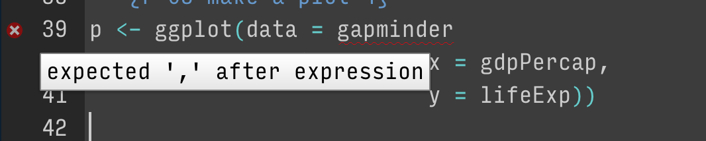
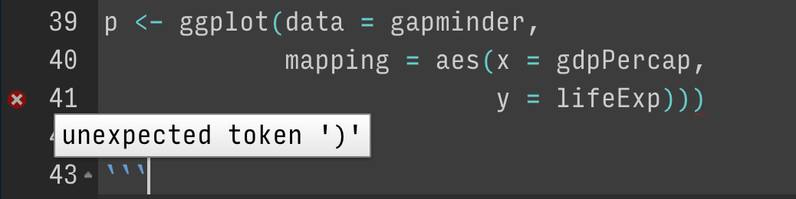
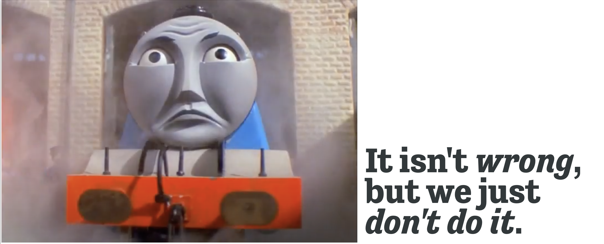

## Inside code chunks, lines beginning with a # character are comments
## Comments are ignored by R
my_numbers <- c(1, 1, 2, 4, 1, 3, 1, 5) # Anything after a # character is ignored as wellFinding your way in R
Data Wrangling, Session 2
Kieran Healy
Code Horizons
January 2026
Writing documents
Use Quarto to produce and reproduce your work
Where we want to end up
PDF out
Where we want to end up
HTML out
Where we want to end up
Word out
How to get there?

- We could write an R script with some notes inside, using it to create some figures and tables, paste them into our document.
- This will work, but we can do better.
We can make this …
… by writing this
The code gets replaced by its output
Quarto document
Quarto document annotated
- This approach has its limitations, but it’s very useful and has many benefits.
Basic markdown summary
| To get this | You write this |
|---|---|
| Heading 1 | # Heading 1 |
| Heading 2 | ## Heading 2 |
| Heading 3 | ### Heading 3 (Actual heading styles will vary.) |
| Paragraph | Just start typing |
| Bold | **Bold** |
| Italic | *Italic* |
| Images | [Alternate text for image](path/image.jpg) |
| Hyperlinks | [Link text](https://www.visualizingsociety.com/) |
| Unordered Lists | |
| - First | - First |
| - Second. | - Second |
| - Third | - Third |
| Ordered Lists | |
| 1. First | 1. First |
| 2. Second. | 2. Second |
| 3. Third | 3. Third |
| Footnote.¹ | Footnote[^notelabel] |
| ¹The note’s content. | [^notelabel] The note's content. |
The right frame of mind
- This is like learning how to drive a car, or how to cook in a kitchen … or learning to speak a language.
- After some orientation to what’s where, you will learn best by doing.
- Software is a pain, but you won’t crash the car or burn your house down.
TYPE OUT
YOUR CODE
BY HAND
Samuel Beckett
GETTING ORIENTED
Loading the tidyverse libraries
── Attaching core tidyverse packages ────────────────────────────────────────────── tidyverse 2.0.0 ──
✔ dplyr 1.1.4 ✔ readr 2.1.5
✔ forcats 1.0.0 ✔ stringr 1.5.1
✔ ggplot2 3.5.1 ✔ tibble 3.2.1
✔ lubridate 1.9.3 ✔ tidyr 1.3.1
✔ purrr 1.0.2
── Conflicts ──────────────────────────────────────────────────────────────── tidyverse_conflicts() ──
✖ dplyr::filter() masks stats::filter()
✖ dplyr::lag() masks stats::lag()
ℹ Use the conflicted package to force all conflicts to become errors- The tidyverse has several components.
- We’ll return to this message about Conflicts later.
Tidyverse components
library(tidyverse)Loading tidyverse: ggplot2Loading tidyverse: tibbleLoading tidyverse: tidyrLoading tidyverse: readrLoading tidyverse: purrrLoading tidyverse: dplyr
- Call the package and …
<|Draw graphs<|Nicer data tables<|Tidy your data<|Get data into R<|Fancy Iteration<|Action verbs for tables
What R looks like
Code you can type and run:
Output:
This is equivalent to running the code above, typing my_numbers at the console, and hitting enter.
What R looks like
By convention, code output in documents is prefixed by ##
Also by convention, outputting vectors, etc, gets a counter keeping track of the number of elements. For example,
Some things to know about R
0. It’s a calculator
0. It’s a calculator
Boolean and Logical operators
Logical equality and inequality (yielding a TRUE or FALSE result) is done with == and !=. Other logical operators include <, >, <=, >=, and ! for negation.
1. Everything in R has a name
Some names are forbidden
Or it’s a really bad idea to try to use them
2. Everything is an object
There are a few built-in objects:
[1] "a" "b" "c" "d" "e" "f" "g" "h" "i" "j" "k" "l" "m" "n" "o" "p" "q" "r" "s"
[20] "t" "u" "v" "w" "x" "y" "z"3. You can create objects
In fact, this is mostly what we will be doing.
Objects are created by assigning a thing to a name:
The c() function combines or concatenates things
The assignment operator
- The assignment operator performs the action of creating objects
- Use a keyboard shortcut to write it:
- Press
optionand-on a Mac - Press
altand-on Windows
4. Do things to objects with functions
4. Do things to objects with functions
- Functions can be identified by the parentheses after their names.
What functions usually do
- They take inputs to arguments
- They perform actions
- They produce, or return, outputs
mean(x = my_numbers)
What functions usually do
- They take inputs to arguments
- They perform actions
- They produce, or return, outputs
mean(x = my_numbers)
[1] 6.25
What functions usually do
What functions usually do
If you don’t name the arguments, R assumes you are providing them in the order the function expects.
What functions usually do
What arguments? Which order? Read the function’s help page
- How to read an R help page?
What functions usually do
- Arguments often tell the function what to do in specific circumstances
[1] NA[1] 32.44444Or select from one of several options
What functions usually do
There are all kinds of functions. They return different things.
What functions usually do
You can assign the output of a function to a name, which turns it into an object. (Otherwise it’ll send its output to the console.)
What functions usually do
Objects hang around in your work environment until they are overwritten by you, or are deleted.
Functions can be nested
Nested functions are evaluated from the inside out.
Use the pipe operator: |>
Instead of deeply nesting functions in parentheses, we can use the pipe operator:
Read this operator as “and then”
Like the assignment operator, this is two characters. To write it, type the pipe character | and then the > character. Better, use a keyboard shortcut. On a Mac, Command Shift M. On a Windows PC, Ctrl Shift M.
If the pipe looks like this, %>% (the Magrittr pipe) don’t worry, it will work the same as the one shown here, |>. But to change it, go to Global Options > Code and check the “Use native pipe operator” box.
Use the pipe operator: |>
Better, vertical space is free in R:
Pipelines make code more readable
- Not great, Bob:
- Notice how the first thing you read is the last operation performed.
Pipelines make code more readable
- We can use vertical space and indents, but it’s really not much better:
Pipelines make code more readable
- Much nicer:
- We’ll still use nested parentheses quite a bit, often in the context of a function working inside a pipeline. But it’s good not to have too many levels of nesting.
Functions are bundled into packages
Packages are loaded into your working environment using the library() function:
# A tibble: 1,704 × 6
country continent year lifeExp pop gdpPercap
<fct> <fct> <int> <dbl> <int> <dbl>
1 Afghanistan Asia 1952 28.8 8425333 779.
2 Afghanistan Asia 1957 30.3 9240934 821.
3 Afghanistan Asia 1962 32.0 10267083 853.
4 Afghanistan Asia 1967 34.0 11537966 836.
5 Afghanistan Asia 1972 36.1 13079460 740.
6 Afghanistan Asia 1977 38.4 14880372 786.
7 Afghanistan Asia 1982 39.9 12881816 978.
8 Afghanistan Asia 1987 40.8 13867957 852.
9 Afghanistan Asia 1992 41.7 16317921 649.
10 Afghanistan Asia 1997 41.8 22227415 635.
# ℹ 1,694 more rowsFunctions are bundled into packages
You need only install a package once (and occasionally update it):
Functions are bundled into packages
But you must load the package in each R session before you can access its contents:
# A tibble: 344 × 8
species island bill_length_mm bill_depth_mm flipper_length_mm body_mass_g
<fct> <fct> <dbl> <dbl> <int> <int>
1 Adelie Torgersen 39.1 18.7 181 3750
2 Adelie Torgersen 39.5 17.4 186 3800
3 Adelie Torgersen 40.3 18 195 3250
4 Adelie Torgersen NA NA NA NA
5 Adelie Torgersen 36.7 19.3 193 3450
6 Adelie Torgersen 39.3 20.6 190 3650
7 Adelie Torgersen 38.9 17.8 181 3625
8 Adelie Torgersen 39.2 19.6 195 4675
9 Adelie Torgersen 34.1 18.1 193 3475
10 Adelie Torgersen 42 20.2 190 4250
# ℹ 334 more rows
# ℹ 2 more variables: sex <fct>, year <int>Grabbing a single function with ::
| species | sex | 2007 | 2008 | 2009 |
|---|---|---|---|---|
| Adelie | female | 22 | 25 | 26 |
| Adelie | male | 22 | 25 | 26 |
| Adelie | NA | 6 | NA | NA |
| Chinstrap | female | 13 | 9 | 12 |
| Chinstrap | male | 13 | 9 | 12 |
| Gentoo | female | 16 | 22 | 20 |
| Gentoo | male | 17 | 23 | 21 |
| Gentoo | NA | 1 | 1 | 3 |
Remember those conflicts?
library(tidyverse)
── Attaching core tidyverse packages ────────────────────────────────────────────── tidyverse 2.0.0 ──
✔ dplyr 1.1.4 ✔ readr 2.1.5
✔ forcats 1.0.0 ✔ stringr 1.5.1
✔ ggplot2 3.5.1 ✔ tibble 3.2.1
✔ lubridate 1.9.3 ✔ tidyr 1.3.1
✔ purrr 1.0.2
── Conflicts ──────────────────────────────────────────────────────────────── tidyverse_conflicts() ──
✖ dplyr::filter() masks stats::filter()
✖ dplyr::lag() masks stats::lag()
ℹ Use the conflicted package to force all conflicts to become errors- Some functions in different packages have the same names.
- Related concepts of namespaces and environments.
The scope of names
The scope of names
5. Vector types; Object classes
I’m going to speak somewhat loosely here for now, and gloss over some distinctions between object classes and data structures, as well as kinds of objects and their attributes.
5. Vector types; Object classes
Objects are made of one or more vectors. A vector can, in effect, have a single type: integer, double, logical, character, factor, date, etc. That is, vectors are “atomic”. Complex objects are mostly lists of vectors of different sorts, or nested lists of other simpler objects that are themselves ultimately made up of vectors of
5. Vector types; Object classes
The object inspector in RStudio is your friend.
You can ask an object what it is at the console, too:
Types of vector

Types of vector
Types of vector

[1] Yes No No Maybe Yes Yes Yes No
Levels: Maybe No YesMaybe No Yes
1 3 4 [1] "integer"$levels
[1] "Maybe" "No" "Yes"
$class
[1] "factor"[1] "Maybe" "No" "Yes" [1] FALSEVectors can’t be heterogenous
- Objects can be manually or automatically coerced from one class to another. Take care.
Vectors can’t be heterogenous
- Objects can be manually or automatically coerced from one class to another. Take care.
A table of data is a kind of list
# A tibble: 1,704 × 6
country continent year lifeExp pop gdpPercap
<fct> <fct> <int> <dbl> <int> <dbl>
1 Afghanistan Asia 1952 28.8 8425333 779.
2 Afghanistan Asia 1957 30.3 9240934 821.
3 Afghanistan Asia 1962 32.0 10267083 853.
4 Afghanistan Asia 1967 34.0 11537966 836.
5 Afghanistan Asia 1972 36.1 13079460 740.
6 Afghanistan Asia 1977 38.4 14880372 786.
7 Afghanistan Asia 1982 39.9 12881816 978.
8 Afghanistan Asia 1987 40.8 13867957 852.
9 Afghanistan Asia 1992 41.7 16317921 649.
10 Afghanistan Asia 1997 41.8 22227415 635.
# ℹ 1,694 more rows[1] "tbl_df" "tbl" "data.frame"[1] "list"A table of data is a kind of list
Lists are collections of vectors of possibly different types and lengths, or collections of more complex objects that are themselves ultimately made out of vectors. Underneath, most complex R objects are some kind of list with different components that can be accessed by some function that knows the names of the things inside the list.
A data frame is a list of vectors of the same length, where the vectors can be of different types (e.g. numeric, character, logical, etc).
A data frame is a natural representation of what most real tables of data look like. Having it be a basic sort of entity in the programming language IS ONE OF R’s BEST IDEAS AND EASILY UNDERRATED!
A tibble is an enhanced data frame
Some classes are versions of others
- Base R’s trusty
data.frame
fate sex n percent
1 perished male 1364 62.0
2 perished female 126 5.7
3 survived male 367 16.7
4 survived female 344 15.6[1] "data.frame"Some classes are versions of others
- Base R’s trusty
data.frame
fate sex n percent
1 perished male 1364 62.0
2 perished female 126 5.7
3 survived male 367 16.7
4 survived female 344 15.6[1] "data.frame"- The Tidyverse’s enhanced
tibble
- A data frame and a tibble are both fundamentally a list of vectors of the same length, where the vectors can be of different types (e.g. numeric, character, logical, etc)
All of this will be clearer in use
# A tibble: 2,867 × 32
year id ballot age childs sibs degree race sex region income16
<dbl> <dbl> <labelled> <dbl> <dbl> <labe> <fct> <fct> <fct> <fct> <fct>
1 2016 1 1 47 3 2 Bache… White Male New E… $170000…
2 2016 2 2 61 0 3 High … White Male New E… $50000 …
3 2016 3 3 72 2 3 Bache… White Male New E… $75000 …
4 2016 4 1 43 4 3 High … White Fema… New E… $170000…
5 2016 5 3 55 2 2 Gradu… White Fema… New E… $170000…
6 2016 6 2 53 2 2 Junio… White Fema… New E… $60000 …
7 2016 7 1 50 2 2 High … White Male New E… $170000…
8 2016 8 3 23 3 6 High … Other Fema… Middl… $30000 …
9 2016 9 1 45 3 5 High … Black Male Middl… $60000 …
10 2016 10 3 71 4 1 Junio… White Male Middl… $60000 …
# ℹ 2,857 more rows
# ℹ 21 more variables: relig <fct>, marital <fct>, padeg <fct>, madeg <fct>,
# partyid <fct>, polviews <fct>, happy <fct>, partners <fct>, grass <fct>,
# zodiac <fct>, pres12 <labelled>, wtssall <dbl>, income_rc <fct>,
# agegrp <fct>, ageq <fct>, siblings <fct>, kids <fct>, religion <fct>,
# bigregion <fct>, partners_rc <fct>, obama <dbl>- Tidyverse tools are generally type safe, meaning their functions return the same type of thing every time, or fail if they cannot do this. So it’s good to know about the various data types.
6. Arithmetic on vectors
In R, all numbers are vectors of different sorts. Even single numbers (“scalars”) are conceptually vectors of length 1.
Arithmetic on vectors (and arrays generally) follows a series of recycling rules that favor ease of expression of vectorized, “elementwise” operations.
See if you can predict what the following operations do:
6. Arithmetic on vectors
6. Arithmetic on vectors
6. Arithmetic on vectors
6. Arithmetic on vectors
6. Arithmetic on vectors
6. Arithmetic on vectors
6. Arithmetic on vectors
6. Arithmetic on vectors
Warning in my_numbers + three_nums: longer object length is not a multiple of
shorter object lengthNote that you get a warning here. It’ll still do it, though! Don’t ignore warnings until you understand what they mean.
7. R will be frustrating
- The IDE tries its best to help you. Learn to attend to what it is trying to say.



Let’s Go!
Time to make a plot
Like before:
# A tibble: 1,704 × 6
country continent year lifeExp pop gdpPercap
<fct> <fct> <int> <dbl> <int> <dbl>
1 Afghanistan Asia 1952 28.8 8425333 779.
2 Afghanistan Asia 1957 30.3 9240934 821.
3 Afghanistan Asia 1962 32.0 10267083 853.
4 Afghanistan Asia 1967 34.0 11537966 836.
5 Afghanistan Asia 1972 36.1 13079460 740.
6 Afghanistan Asia 1977 38.4 14880372 786.
7 Afghanistan Asia 1982 39.9 12881816 978.
8 Afghanistan Asia 1987 40.8 13867957 852.
9 Afghanistan Asia 1992 41.7 16317921 649.
10 Afghanistan Asia 1997 41.8 22227415 635.
# ℹ 1,694 more rowsLike before
What we did
- Load the packages we need:
tidyverseandgapminder
What we did
- New object named
pgetsthe output of theggplot()function, given these arguments - Notice how one of the arguments,
mapping, is itself taking the output of a function namedaes()
What we did
- Show me the output of the
pobject and thegeom_point()function. - The
+here acts just like the|>pipe, but for ggplot functions only. (This is an accident of history.)
And what is R doing?
R objects are just lists of stuff to use or things to do
Objects are like Bento Boxes
The p object
Peek in with the object inspector
Peek in with the object inspector
Appendix: A Few More R Details
Logic: Watch out!
Here’s a gotcha. You might think you could write 3 < 5 & 7 and have it be interpreted as “Three is less than five and also less than seven [True or False?]”:
It seems to work!
Logic: Watch out!
But now try 3 < 5 & 1, where your intention is “Three is less than five and also less than one [True or False?]”
- What’s happening is that
3 < 5is evaluated first, and resolves to TRUE, leaving us with the expressionTRUE& 1. - R interprets this as
TRUE& as.logical(1). - In Boolean algebra,
1resolves toTRUE. Any other number isFALSE. So,
Logic: Watch out!
- You have to make your comparisons explicit.
Logic and floating point arithmetic
Let’s evaluate 0.6 + 0.2 == 0.8
Logic and floating point arithmetic
Let’s evaluate 0.6 + 0.2 == 0.8
Logic and floating point arithmetic
Let’s evaluate 0.6 + 0.2 == 0.8
Now let’s try 0.6 + 0.3 == 0.9
Logic and floating point arithmetic
Let’s evaluate 0.6 + 0.2 == 0.8
Now let’s try 0.6 + 0.3 == 0.9
Er. That’s not right.
Welcome to floating point math!
In Base 10, you can’t precisely express fractions like \(\frac{1}{3}\) and \(\frac{1}{9}\). They come out as repeating decimals: 0.3333… or 0.1111… You can cleanly represent fractions that use a prime factor of the base, which in the case of Base 10 are 2 and 5.
Welcome to floating point math!
In Base 10, you can’t precisely express fractions like \(\frac{1}{3}\) and \(\frac{1}{9}\). They come out as repeating decimals: 0.3333… or 0.1111… You can cleanly represent fractions that use a prime factor of the base, which in the case of Base 10 are 2 and 5.
Computers represent numbers as binary (i.e. Base 2) floating-points. In Base 2, the only prime factor is 2. So \(\frac{1}{5}\) or \(\frac{1}{10}\) in binary would be repeating.
Logic and floating point arithmetic
When you do binary math on repeating numbers and convert back to decimals you get tiny leftovers, and this can mess up logical comparisons of equality. The all.equal() function exists for this purpose.
[1] 0.3[1] 0.300000000000000044[1] TRUESee e.g. https://0.30000000000000004.com
More later on why this might bite you, and how to deal with it
Assignment with =
- You can use
=as well as<-for assignment.
- On the other hand,
=has a different meaning when used in functions. - I’m going to use
<-for assignment throughout. - Be consistent either way.
Assignment with =
The other pipe: %>%
- The Base R pipe operator,
|>is a relatively recent addition to R. - Piping operations were originally introduced in a package called called
magrittr, where it took the form%>%
The other pipe: %>%
- The Base R pipe operator,
|>is a relatively recent addition to R. - Piping operations were originally introduced in a package called called
magrittr, where it took the form%>% - It’s been so successful, a version of it has been incorporated into Base R. It mostly but does not quite work the same way as
%>%in every case.
The other pipe: %>%
- The Base R pipe operator,
|>is a relatively recent addition to R. - Piping operations were originally introduced in a package called called
magrittr, where it took the form%>% - It’s been so successful, a version of it has been incorporated into Base R. It mostly but does not quite work the same way as
%>%in every case. We’ll use the Base R pipe in this course, but you’ll see the Magrittr pipe a lot out in the world.
Object classes
Objects can have more than one (nested) class:
Min. 1st Qu. Median Mean 3rd Qu. Max.
1.000 1.500 3.000 5.714 4.000 25.000 [1] "summaryDefault" "table" [1] "summaryDefault" "table" Object classes
[1] "double"$names
[1] "Min." "1st Qu." "Median" "Mean" "3rd Qu." "Max."
$class
[1] "summaryDefault" "table" [1] "summaryDefault" "table" [1] "Min." "1st Qu." "Median" "Mean" "3rd Qu." "Max."